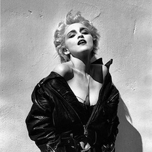

Madonna Tribute Page
No matter who you are, no matter what you did, no matter where you've come from, you can always change, become a better version of yourself.

Timeline of Madonna's Biggest Moments.
- 1978 - In 1978, Michigan-born Madonna Louise Ciccone dropped out of college and moved to New York City to pursue a career in dance.
- 1982 - Madonna released “Everybody", her debut single, on Sire on Oct. 6, 1982. The 24-year-old singer wasn’t pictured on the single artwork, reportedly because the label wanted to market the song to an African-American audience.
- 1983 - On July 27, 1983, Madonna released her self-titled debut on Sire. It debuted at No. 190 on the Billboard 200, peaking at No. 8 in 1984. She wrote five of the album’s eight tracks, including “Burning Up” and “Lucky Star.”
- 1983 - “Borderline,” one of two Madonna tracks written by album producer Reggie Lucas, became Madonna’s first top 10 single on the Billboard Hot 100. The fifth single from her first album, the track peaked at No. 10.
- 1984 - In what many now consider a career-making performance, Madonna performed at the first-ever MTV VMAs in 1984. Singing “Like a Virgin” in a wedding dress while gyrating and writhing suggestively on the floor, Madonna scandalized many and captured the attention of everyone. “Like a Virgin” became her first No. 1 single on the Hot 100 and No. 1 album on the Billboard 200.
- 1985 - Madonna starred alongside Rosanna Arquette in Desperately Seeking Susan, which opened on March 29, 1985. Playing a carefree version of herself, Madonna’s fashion in the film (and “Into the Groove”) made a huge impression on pop culture.
- 1985 - In April of 1985, Madonna kicked off The Virgin Tour, her first North American tour. Her opening act? The Beastie Boys.
- 1986 - Madonna’s third album, True Blue, was dedicated to her then-husband Sean Penn (“true blue” was her nickname for him). The 1986 album saw Madonna debut a more adult look, tackle more mature themes (including teen pregnancy) and gave her three No. 1s on the Hot 100: “Live to Tell,” “Papa Don’t Preach” and “Open Your Heart.”
- 1987 - In July 1987, Madonna kicked off her first world tour, the Who’s That Girl World Tour. Named after a screwball comedy she starred in alongside Griffin Dunne (and the film’s No. 1 title track), the tour was a massive success, although Pope John Paul II urged people to boycott the show in Italy.
- 1989 - Madonna once again courted controversy in 1989 with the release of her “Like a Prayer” video, which featured her kissing a saint and dancing in front of burning crucifixes. As a result of the outrage, the Vatican condemned the video and Pepsi canceled a contract with Madonna. Both the single and album of the same name hit No. 1.
- 1990 - Inspired by the New York underground ballroom scene (captured in the 1990 documentary Paris Is Burning) of the ’80s, Madonna took vogue-ing from the gay underground to mainstream America with her No. 1 hit and iconic video, which paid homage to classic Hollywood stars.
- 1991 - The Madonna-approved 1991 documentary Truth or Dare followed her Blond Ambition World tour, including the Toronto show where police reportedly threatened to arrest her if she simulated masturbation on stage. Madonna did just that, but no arrests were made.
- 1992 - Madonna released the coffee-table book Sex in 1992 alongside her Erotica album. The book featured erotic and nude photos, including shots that simulated S&M and analingus. Vanilla Ice, Big Daddy Kane, Naomi Campbell and Isabella Rossellini all appeared in the book. This marked the peak of Madonna’s transgressive period. While negatively received at the time, some now consider it a key piece of post-feminist art.
No other woman, apart from my mother, has shaped who I am like Madonna has. A bold statement, but a bold woman entering your impressionable teenage life can have that effect.
Cher Grande